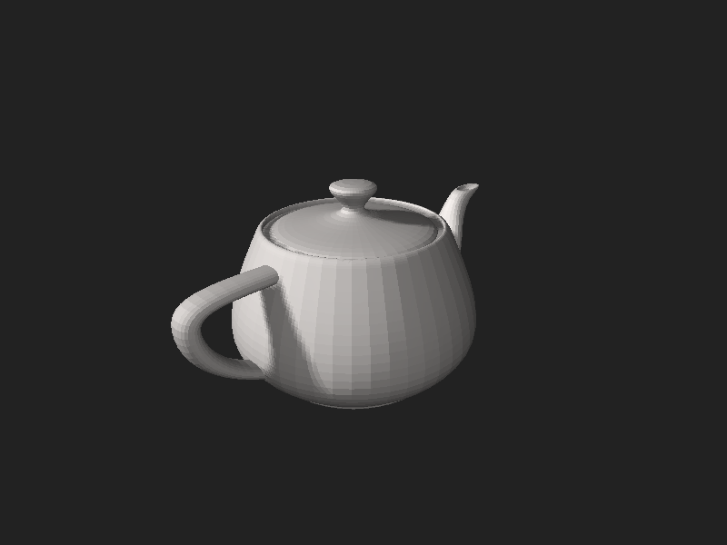
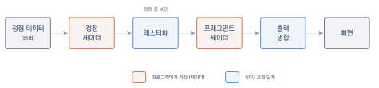
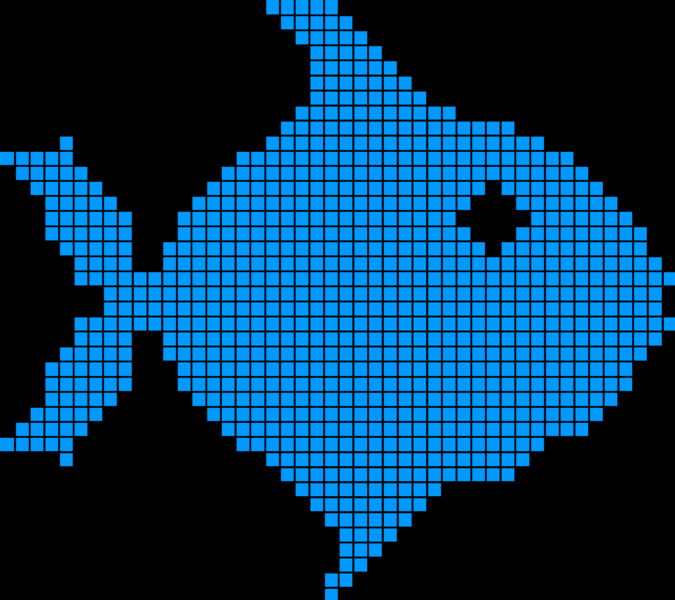
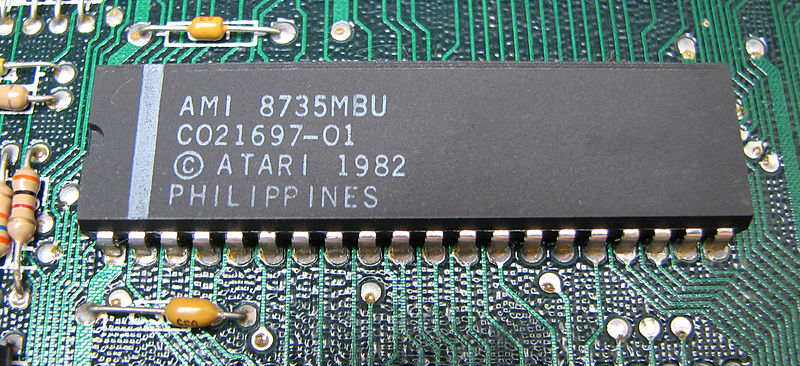
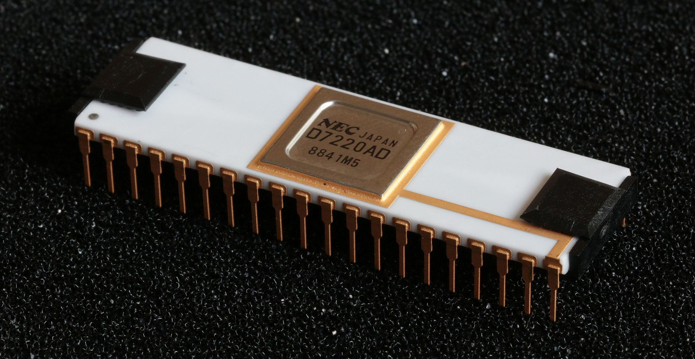
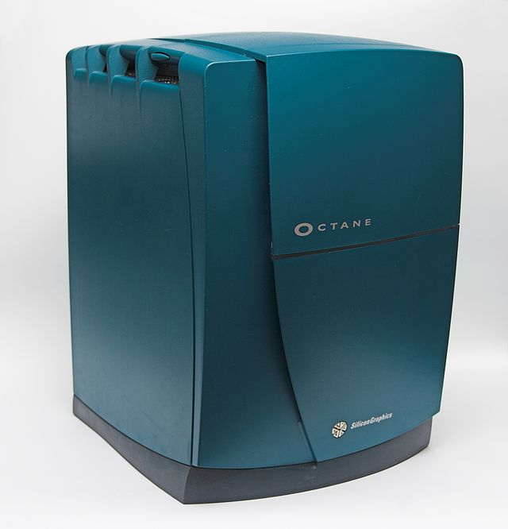

3차원 그래픽스와 WebGL 소개
이 장을 마치면
- 3차원 컴퓨터 그래픽스의 기본 개념과 응용 분야를 설명할 수 있다.
- 렌더링 파이프라인의 각 단계가 하는 일을 이해할 수 있다.
- WebGL이 무엇이고 어떤 장점이 있는지 설명할 수 있다.
- WebGL 개발에 필요한 도구를 준비할 수 있다.
- HTML 캔버스에서 WebGL 컨텍스트를 얻어 화면을 지우는 첫 프로그램을 작성·실행할 수 있다.
우리가 즐기는 게임의 생생한 3차원 세계, 영화 속 실감 나는 시각 효과, 웹 브라우저에서 회전시켜 볼 수 있는 제품 모델 — 이 모든 것의 배후에는 3차원 컴퓨터 그래픽스라는 기술이 작동하고 있다. 3차원 그래픽스를 배운다는 것은 단순히 그림을 그리는 기술을 익히는 것이 아니라, 공간과 빛을 수학으로 표현하고 이를 컴퓨터가 계산 가능한 절차로 바꾸는 사고방식을 기르는 과정이다.
이 장에서는 먼저 3차원 그래픽스가 무엇이고 어디에 쓰이는지 살펴본 뒤, 3차원 장면이 2차원 화면의 픽셀로 바뀌기까지의 과정인 렌더링 파이프라인을 개관한다. 이어서 웹 브라우저에서 3차원 그래픽스를 구현하는 표준 기술인 WebGL을 소개하고, 개발 환경을 준비하여 첫 번째 WebGL 프로그램을 직접 작성해 본다.
1.1 3차원 컴퓨터 그래픽스란
컴퓨터 그래픽스computer graphics는 컴퓨터를 이용하여 이미지를 생성하고 조작하는 기술이다. 그중에서도 3차원 그래픽스는 가상의 3차원 공간에 물체를 배치하고, 이 공간을 바라보는 카메라를 설정하여, 카메라에 비친 장면을 2차원 이미지로 만들어 내는 기술을 말한다. 이렇게 3차원 장면으로부터 2차원 이미지를 만들어 내는 과정을 렌더링rendering이라고 한다.
3차원 그래픽스는 오늘날 매우 넓은 분야에서 활용되고 있다.
- 게임과 엔터테인먼트: 실시간으로 3차원 세계를 렌더링하여 사용자와 상호작용한다.
- 영화와 애니메이션: 사실적인 시각 효과와 캐릭터 애니메이션을 만들어 낸다.
- 제조와 설계: 제품을 만들기 전에 3차원 모델로 설계하고 검증한다(CAD).
- 가상현실과 증강현실: 몰입형 3차원 경험을 제공한다(VR/AR).
- 과학적 시각화: 의료 영상, 기상 데이터, 분자 구조 등을 3차원으로 표현한다.
장면을 이루는 요소
3차원 장면을 만들려면 최소한 다음 세 가지 요소가 필요하다. 첫째, 그려질 대상인 물체object이다. 3차원 물체는 보통 수많은 삼각형을 이어 붙인 메시mesh로 표현하며, 각 삼각형의 꼭짓점을 정점vertex이라고 한다. 둘째, 장면을 바라보는 카메라camera이다. 카메라의 위치와 방향에 따라 같은 장면도 전혀 다른 이미지가 된다. 셋째, 물체를 비추는 광원light source이다. 빛이 없으면 아무것도 보이지 않으며, 빛과 물체 표면의 상호작용을 계산하는 것이 사실적인 렌더링의 핵심이다.

그림 1.1의 유타 주전자Utah teapot는 1975년 유타 대학의 마틴 뉴웰이 만든 이래 컴퓨터 그래픽스에서 가장 널리 쓰이는 시험 모델이다. (모델 렌더링: zzubnik (Nik Clark, Norwich, UK), CC0, via Wikimedia Commons.) 곡면이 있어 셰이딩을 확인하기 좋고 손잡이·주둥이처럼 위상이 복잡한 부분이 있어, 새 렌더링 기법을 시험할 때 관례적으로 이 주전자를 그린다. 매끄러워 보이지만 이 주전자 역시 수많은 삼각형으로 이루어진 메시이며, 표면을 확대하면 삼각형의 경계가 드러난다.
3차원 그래픽스의 본질은 물체(정점들) + 카메라 + 광원으로 구성된 3차원 장면을 수학적으로 계산하여 2차원 픽셀 배열로 바꾸는 것, 즉 렌더링이다.
렌더링 파이프라인
3차원 정점 데이터가 화면의 픽셀이 되기까지는 정해진 순서의 처리 단계를 거친다. 이 일련의 과정을 렌더링 파이프라인rendering pipeline이라고 한다. GPU는 이 파이프라인을 하드웨어로 구현하여 초당 수억 개의 삼각형을 처리한다. 파이프라인의 큰 흐름은 다음과 같다.
- 정점 처리: 각 정점의 3차원 좌표를 화면 좌표로 변환한다. 이 단계는 프로그래머가 작성하는 정점 셰이더vertex shader가 담당한다.
- 래스터화: 변환된 정점들이 이루는 삼각형 내부를 채우는 픽셀 후보, 즉 프래그먼트fragment들을 생성한다.
- 프래그먼트 처리: 각 프래그먼트의 최종 색을 계산한다. 이 단계는 프래그먼트 셰이더fragment shader가 담당하며, 조명 계산과 텍스처 적용이 주로 여기서 일어난다.
- 출력 병합: 깊이 검사 등을 거쳐 최종 색을 화면 버퍼에 기록한다.
그림 1.2은 이 흐름을 도식으로 나타낸 것이다. 정점 데이터가 왼쪽에서 들어와 여러 단계를 거쳐 오른쪽 화면에 도달하며, 카퍼 색으로 표시한 정점 셰이더와 프래그먼트 셰이더가 프로그래머가 직접 작성하는 단계이다.

과거의 그래픽스 API는 파이프라인의 동작이 고정되어 있어 정해진 방식으로만 그림을 그릴 수 있었다. 현대 그래픽스에서는 정점 처리와 프래그먼트 처리 단계를 프로그래머가 직접 작성한 프로그램, 즉 셰이더로 대체한다. 셰이더를 어떻게 작성하느냐에 따라 만화풍 렌더링부터 사실적인 금속 질감까지 무한한 표현이 가능해진다. 셰이더 작성법은 3장에서 본격적으로 다룬다.
실시간 렌더링과 오프라인 렌더링
렌더링은 계산에 쓸 수 있는 시간에 따라 크게 두 갈래로 나뉜다. 영화나 애니메이션처럼 한 장면을 미리 오랜 시간에 걸쳐 계산하는 방식을 오프라인 렌더링offline rendering이라고 한다. 한 프레임을 그리는 데 몇 분에서 몇 시간을 들일 수 있으므로, 빛의 반사와 굴절을 정교하게 추적하여 사진과 구별하기 어려운 결과를 얻는다.
그림 1.3은 유리잔의 투명함과 반사, 그림자를 정교하게 계산한 오프라인 렌더링의 예이다. (Gilles Tran, Public domain, via Wikimedia Commons.) 반면 게임처럼 사용자의 조작에 즉각 반응해야 하는 콘텐츠는 초당 수십 장의 화면을 그 자리에서 만들어 내야 한다. 이렇게 정해진 짧은 시간 안에 화면을 생성하는 방식을 실시간 렌더링real-time rendering이라고 한다.
WebGL은 바로 이 실시간 렌더링을 위한 기술이다. 오프라인 렌더링만큼의 사실성을 한 프레임에 담기는 어렵지만, GPU의 병렬 처리 능력을 활용해 매끄러운 상호작용을 제공한다. 이 책이 다루는 대상도 실시간 렌더링이며, 앞서 살펴본 렌더링 파이프라인은 이 실시간 처리를 위해 설계된 구조이다. 다만 하드웨어와 알고리즘이 발전하면서 두 갈래의 경계는 점점 좁아지고 있다.
1.2 컴퓨터 그래픽스의 역사
WebGL을 배우기에 앞서, 오늘날의 실시간 3차원 그래픽스가 어떤 길을 거쳐 왔는지 짚어 보자. 그래픽스의 역사는 컴퓨터의 역사와 나란히 흘러왔으며, 지금 우리가 당연하게 쓰는 화소, 셰이딩, 텍스처, GPU 같은 개념들은 모두 지난 반세기 동안 한 조각씩 발명되어 쌓인 것이다. 그 흐름의 끝에 우리가 배울 WebGL이 자리한다.
여명기 — 상호작용 그래픽스의 탄생
컴퓨터가 만든 정보를 눈으로 보려는 시도는 컴퓨팅의 아주 초기부터 있었다. 1950–60년대의 초창기 디스플레이는 지금처럼 화면을 화소로 채우는 방식이 아니라, 전자총으로 선을 직접 그리는 벡터 디스플레이vector display였다. 오실로스코프 같은 이 장치는 선을 긋는 데는 능했지만 면을 칠하기는 어려웠기에, 이 시기의 그래픽스는 물체의 뼈대만 선으로 드러내는 와이어프레임wireframe 표현이 주를 이루었다.
이 시기에 오늘날 그래픽스의 씨앗이 될 몇 가지 사건이 있었다. 1958년 물리학자 윌리엄 히긴보덤은 오실로스코프 화면에 공이 오가는 2인용 테니스를 만들어 전시했는데, 이는 상호작용이 가능한 최초의 그래픽 게임 가운데 하나로 꼽힌다. 컴퓨터 그래픽스computer graphics라는 용어 자체는 1960년 무렵 항공기 제조사 보잉의 윌리엄 페터가 처음 사용한 것으로 알려져 있다.
그러나 이 분야의 진정한 출발점으로 평가받는 것은 1963년 아이번 서덜랜드가 발표한 스케치패드Sketchpad이다. 서덜랜드는 라이트펜으로 화면에 직접 도형을 그리고 조작하는 이 시스템으로, 사람과 컴퓨터가 그림을 매개로 실시간으로 소통할 수 있음을 처음으로 보여 주었다. 스케치패드는 오늘날의 그래픽 사용자 인터페이스와 CAD의 조상이며, 이 공로로 서덜랜드는 흔히 "컴퓨터 그래픽스의 아버지"라 불린다. 그는 1968년 머리에 쓰는 디스플레이(HMD)까지 만들어, 훗날의 가상현실을 반세기 앞서 예고하기도 했다.
유타 대학과 셰이딩 알고리즘의 시대
1970년대에 접어들면서 화면을 규칙적인 격자로 나누고 각 칸의 색을 지정하는 래스터 그래픽스raster graphics가 표준으로 자리 잡았다. 이 격자의 한 칸, 즉 색을 담는 최소 단위가 바로 화소pixel이다.

그림 1.4처럼 래스터 그래픽스에서는 모든 그림이 화소의 모임으로 표현된다. (Andreas -horn- Hornig, CC BY-SA 2.5, via Wikimedia Commons.) 화소 단위로 색을 채울 수 있게 되면서 면을 칠하고 음영을 표현하는 일이 수월해졌고, 사실적인 이미지 생성의 토대가 마련되었다.
이 시대의 무대는 단연 미국 유타 대학이었다. 서덜랜드와 데이비드 에번스가 이끈 유타 대학의 연구실에서, 오늘날까지 쓰이는 핵심 알고리즘들이 잇달아 태어났다. 면을 부드럽게 칠하는 구로 셰이딩Gouraud shading(1971)과 반질거리는 하이라이트까지 표현하는 퐁 셰이딩Phong shading(1973)이 이곳에서 고안되었다. 뒷면을 가리는 물체를 올바르게 처리하는 깊이 버퍼depth buffer와 표면에 이미지를 입히는 텍스처 매핑texture mapping은 훗날 픽사를 공동 창업하는 에드윈 캣멀이 1974년에 내놓았다. 그리고 1975년, 마틴 뉴웰이 만든 유타 주전자(그림 1.1)가 이 연구실에서 탄생해 그래픽스의 상징이 되었다. 이 시기에 컴퓨터 그래픽스의 대표 학회인 SIGGRAPH도 처음 열렸다(1974).
한편 빛의 경로를 한 줄기씩 추적해 반사와 그림자를 사실적으로 그려 내는 광선 추적법ray tracing의 이론은 1968년 아서 아펠이 제시했고, 1980년 터너 휘티드가 반사와 굴절을 재귀적으로 따라가는 방식으로 발전시켰다. 계산량이 막대해 당시에는 실시간으로 쓸 수 없었지만, 오늘날 영화 수준의 사실적 영상을 만드는 오프라인 렌더링(그림 1.3)의 근간이 되었다.
하드웨어 가속과 그래픽 처리 장치
1980년대에 개인용 컴퓨터가 보급되면서, 그래픽 처리를 전담하는 별도의 하드웨어가 등장하기 시작했다. 중앙처리장치(CPU)가 모든 계산을 도맡는 대신, 화면 출력과 그리기를 전문으로 처리하는 칩을 두어 성능을 끌어올린 것이다. 이것이 오늘날 그래픽 처리 장치graphics processing unit, 즉 GPU의 조상이다.


그림 1.5의 왼쪽은 1980년대 아케이드 게임과 가정용 컴퓨터에 쓰인 아타리의 그래픽 칩이고, (Rod Castler, CC BY-SA 3.0, via Wikimedia Commons.) 오른쪽은 개인용 컴퓨터를 위한 최초의 GPU로 꼽히는 NEC의 μPD7220이다. (Drahtlos, CC BY-SA 4.0, via Wikimedia Commons.) 이런 전용 하드웨어와 함께, 화면 전체의 색을 메모리에 담아 두는 프레임버퍼frame buffer 방식이 자리 잡으면서 화면에 도형과 문자를 빠르게 그릴 수 있게 되었다.
이 무렵 컴퓨터 그래픽스는 처음으로 대중 앞에 실력을 드러냈다. 1982년 영화 《트론》이 컴퓨터로 만든 영상을 본격적으로 사용했고, 같은 해 《스타 트렉 2》에는 온전히 컴퓨터 그래픽스만으로 만든 장면이 처음 등장했다. 상상 속에서나 가능하던 장면을 계산으로 만들어 낼 수 있음을 보여 준 사건이었다.
실시간 그래픽스와 OpenGL, 그리고 WebGL
1990년대는 GPU가 컴퓨터 그래픽스를 혁명적으로 바꾼 시기이다. 개인용 컴퓨터에도 고성능 GPU가 표준으로 탑재되면서, 텍스처 매핑과 조명 계산 같은 무거운 작업이 실시간으로 가능해졌다. 이 시기에 실시간 그래픽스의 사실상 산업 표준이 되는 OpenGLOpen Graphics Library이 등장했다(1992).

OpenGL 표준을 주도한 회사는 그림 1.6과 같은 고성능 그래픽 워크스테이션을 만들던 실리콘 그래픽스(Silicon Graphics)였다. (Afrank99, CC BY-SA 2.0, via Wikimedia Commons.) OpenGL은 특정 하드웨어나 운영체제에 얽매이지 않는 개방형 표준을 지향했기에, 다양한 시스템에서 같은 방식으로 3차원 그래픽스를 구현할 수 있게 해 주었다. 이 표준 위에서 《둠》(1993)과 《퀘이크》(1996) 같은 실시간 3차원 게임이 꽃을 피웠고, 1995년에는 픽사가 전부 컴퓨터 그래픽스로 만든 최초의 장편 영화 《토이 스토리》를 선보이며 오프라인 렌더링의 상업적 가치를 입증했다.
1999년 엔비디아가 내놓은 지포스 256은 변환과 조명 계산까지 하드웨어로 처리하며 "GPU"라는 이름을 대중화했다. 이어 2000년대 초, GPU는 고정된 기능만 수행하던 장치에서 프로그래머가 동작을 직접 정의할 수 있는 프로그램 가능한programmable 장치로 진화했다. 이로써 셰이더를 작성해 무한한 표현을 만들어 내는 오늘날의 그래픽스가 열렸으며, 이 셰이더를 작성하는 언어가 바로 3장에서 배울 GLSL이다.
그리고 이 OpenGL을 모바일·임베디드 기기로 옮긴 OpenGL ES가 다시 웹 브라우저로 들어와 WebGLWeb Graphics Library이 되었다. WebGL 1.0은 2011년, 이 책이 기준으로 삼는 WebGL 2.0은 2017년에 표준이 되었다. 반세기에 걸친 그래픽스의 여정이, 이제 브라우저만 열면 누구나 손댈 수 있는 기술로 우리 앞에 도착한 것이다.
| 연도 | 사건 |
|---|---|
| 1963 | 서덜랜드의 스케치패드 — 상호작용 그래픽스의 출발 |
| 1971 | 구로 셰이딩 (유타 대학) |
| 1973 | 퐁 셰이딩 (유타 대학) |
| 1974 | 깊이 버퍼·텍스처 매핑 (캣멀), SIGGRAPH 창설 |
| 1975 | 유타 주전자 (마틴 뉴웰) |
| 1980 | 재귀적 광선 추적법 (휘티드) |
| 1992 | OpenGL 표준 발표 (실리콘 그래픽스) |
| 1995 | 최초의 전편 CG 영화 《토이 스토리》 |
| 1999 | 엔비디아 지포스 256, "GPU" 용어 대중화 |
| 2000년대 | 프로그램 가능한 셰이더의 등장 |
| 2011 | WebGL 1.0 표준 |
| 2017 | WebGL 2.0 표준 (이 책의 기준) |
컴퓨터 그래픽스는 벡터 디스플레이 → 래스터 그래픽스(화소) → 셰이딩 알고리즘 → 전용 GPU → 프로그램 가능한 GPU의 흐름으로 발전해 왔다. 이 과정에서 태어난 실시간 그래픽스 표준 OpenGL이 웹으로 옮겨 온 것이 WebGL이며, 우리는 이 반세기의 성취 위에서 그래픽스를 배운다.
1.3 WebGL이란
WebGLWeb Graphics Library은 웹 브라우저에서 플러그인 없이 GPU 가속 3차원 그래픽스를 렌더링하기 위한 자바스크립트 API 표준이다. 데스크톱 그래픽스 표준인 OpenGL의 임베디드 버전(OpenGL ES)을 웹으로 가져온 것으로, 크로노스 그룹(Khronos Group)이 표준을 관리한다.
| 표준 | 기반 | 대상 플랫폼 |
|---|---|---|
| OpenGL | — | 데스크톱 (Windows, macOS, Linux) |
| OpenGL ES | OpenGL 축소판 | 모바일·임베디드 기기 |
| WebGL 1.0 | OpenGL ES 2.0 | 웹 브라우저 |
| WebGL 2.0 | OpenGL ES 3.0 | 웹 브라우저 (현재 표준) |
WebGL 2.0은 현재 모든 주요 브라우저(크롬, 엣지, 파이어폭스, 사파리)에서 지원되며, 이 책은 WebGL 2.0을 기준으로 설명한다.
WebGL의 장점
WebGL로 그래픽스를 배우면 다음과 같은 장점이 있다.
- 설치가 필요 없다: 웹 브라우저와 텍스트 편집기만 있으면 어떤 운영체제에서든 즉시 시작할 수 있다.
- 결과 공유가 쉽다: 작성한 프로그램은 URL 하나로 누구에게나 전달되고, 받는 사람은 클릭 한 번으로 실행한다.
- 표준 그래픽스 개념을 그대로 배운다: WebGL의 셰이더, 버퍼, 텍스처 개념은 OpenGL·Vulkan·Metal 등 다른 그래픽스 API에도 그대로 통용된다.
- 생태계가 넓다: Three.js, Babylon.js 같은 상위 라이브러리부터 지도(구글 맵), 디자인 도구(Figma)까지 광범위하게 실무에서 쓰인다.
WebGL은 그림을 자동으로 그려 주는 도구가 아니다. 삼각형 하나를 그리는 데에도 버퍼 준비, 셰이더 작성, 파이프라인 설정이 필요한 저수준(low-level) API이다. 처음에는 번거롭게 느껴지지만, 바로 그 과정에서 그래픽스가 실제로 동작하는 원리를 정확히 배울 수 있다. 편리한 고수준 라이브러리(Three.js)는 원리를 익힌 뒤 12장에서 다룬다.
WebGL 프로그램의 구조
WebGL 프로그램은 두 가지 언어로 이루어진다. 브라우저에서 실행되며 파이프라인을 준비하고 명령을 내리는 자바스크립트 코드와, GPU에서 실행되며 정점과 프래그먼트를 처리하는 GLSLOpenGL Shading Language 셰이더 코드이다. 자바스크립트가 무대를 준비하는 감독이라면, GLSL 셰이더는 무대 위에서 실제 연기를 하는 배우인 셈이다.
1.4 첫 번째 WebGL 프로그램
이제 첫 WebGL 프로그램을 만들어 보자. 준비물은 웹 브라우저와 텍스트 편집기(VS Code 권장)뿐이다. 첫 프로그램의 목표는 소박하다. 웹 페이지에 캔버스를 만들고, WebGL로 캔버스를 원하는 색으로 지우는 것이다. 화면을 색으로 지우는 것은 모든 렌더링의 첫 단계이므로, 이 프로그램이 동작하면 WebGL을 쓸 준비가 끝났다는 뜻이다.
HTML 문서와 캔버스
WebGL은 HTML의 캔버스canvas 요소 위에 그림을 그린다. 먼저 캔버스 하나를 담은 HTML 파일을 만들자.
<!DOCTYPE html>
<html>
<head>
<meta charset="UTF-8">
<title>첫 번째 WebGL 프로그램</title>
</head>
<body>
<canvas id="glCanvas" width="600" height="400"></canvas>
<script src="first.js"></script>
</body>
</html>캔버스에는 자바스크립트에서 찾을 수 있도록 id를 부여하고, width·height 속성으로 픽셀 단위 크기를 지정했다. 마지막 줄의 script 태그가 이제부터 작성할 자바스크립트 파일을 불러온다.
WebGL 컨텍스트 얻기
캔버스에 WebGL로 그림을 그리려면 먼저 렌더링 컨텍스트rendering context를 얻어야 한다. 컨텍스트는 WebGL의 모든 기능이 담긴 객체로, 캔버스의 getContext() 메소드로 얻는다.
// 캔버스 요소를 찾아 WebGL 2.0 컨텍스트를 얻는다
const canvas = document.getElementById('glCanvas');
const gl = canvas.getContext('webgl2');
if (!gl) {
// 브라우저가 WebGL 2.0을 지원하지 않는 경우
alert('WebGL 2.0을 지원하지 않는 브라우저입니다.');
}
// 캔버스를 지울 색을 지정한다 (R, G, B, A — 각 0.0~1.0)
gl.clearColor(0.1, 0.15, 0.25, 1.0);
// 색 버퍼를 지정한 색으로 지운다
gl.clear(gl.COLOR_BUFFER_BIT);관례에 따라 컨텍스트를 담는 변수 이름은 gl로 짓는다. 이후 모든 WebGL 기능은 gl.clearColor()처럼 이 객체를 통해 호출한다.
clearColor()의 네 인자는 빨강(R), 초록(G), 파랑(B), 불투명도(A)이며, 각각 0.0에서 1.0 사이의 실수이다. 0–255 정수를 쓰는 CSS와 달리 WebGL은 색을 항상 0.0–1.0 범위로 다룬다는 점에 주의하자. first.html을 브라우저로 열면 짙은 남색으로 칠해진 캔버스가 나타난다.
모든 WebGL 프로그램은 다음 두 단계로 시작한다.
- HTML 캔버스 요소를 준비한다.
canvas.getContext('webgl2')로 렌더링 컨텍스트gl을 얻는다.
gl 객체의 메소드 호출이다.getContext('webgl2')가 null을 반환하면 이후의 모든 gl. 호출에서 TypeError: Cannot read properties of null 오류가 발생한다. WebGL 프로그램이 동작하지 않을 때는 가장 먼저 브라우저 개발자 도구(F12)의 콘솔을 열어 오류 메시지를 확인하는 습관을 들이자.
동작 원리 들여다보기
화면을 지우는 짧은 코드에도 그래픽스의 중요한 개념이 숨어 있다. clearColor()는 지울 색을 설정만 할 뿐 아무것도 그리지 않는다. 실제로 화면이 바뀌는 것은 clear()를 호출하는 순간이다. 이처럼 WebGL은 상태 기계state machine로 동작한다. 즉, 각종 설정 값을 컨텍스트에 저장해 두고, 그리기 명령이 실행될 때 현재 저장된 상태들을 사용한다. 이 개념은 앞으로 계속 등장하므로 기억해 두자.
실습 1-1 본문의 first.html과 first.js를 직접 만들어 브라우저에서 실행해 보자. 그런 다음 clearColor()의 인자를 바꾸어 캔버스를 (1) 검은색, (2) 흰색, (3) 자신이 좋아하는 색으로 지워 보자.
해답
// (1) 검은색
gl.clearColor(0.0, 0.0, 0.0, 1.0);
gl.clear(gl.COLOR_BUFFER_BIT);
// (2) 흰색
gl.clearColor(1.0, 1.0, 1.0, 1.0);
gl.clear(gl.COLOR_BUFFER_BIT);
// (3) 예: 청록색 — CSS의 rgb(0, 128, 128)은 128/255 ≈ 0.5
gl.clearColor(0.0, 0.5, 0.5, 1.0);
gl.clear(gl.COLOR_BUFFER_BIT);실습 1-2 브라우저가 WebGL 2.0을 지원하지 않으면 WebGL 1.0으로, 그것도 안 되면 안내 메시지를 출력하도록 컨텍스트 획득 코드를 개선해 보자.
해답
const canvas = document.getElementById('glCanvas');
let gl = canvas.getContext('webgl2');
if (!gl) {
console.log('WebGL 2.0 미지원 — WebGL 1.0을 시도합니다.');
gl = canvas.getContext('webgl');
}
if (!gl) {
alert('이 브라우저는 WebGL을 지원하지 않습니다.');
}1장 요약
- 3차원 컴퓨터 그래픽스는 물체·카메라·광원으로 구성된 3차원 장면을 2차원 이미지로 만들어 내는 기술이며, 이 과정을 렌더링이라고 한다.
- 3차원 물체는 삼각형들을 이어 붙인 메시로 표현하며, 삼각형의 꼭짓점을 정점이라고 한다.
- 렌더링 파이프라인은 정점 처리 → 래스터화 → 프래그먼트 처리 → 출력 병합의 순서로 진행되며, 정점 처리와 프래그먼트 처리는 프로그래머가 작성하는 셰이더가 담당한다.
- WebGL은 웹 브라우저에서 GPU 가속 3차원 그래픽스를 구현하는 자바스크립트 API 표준으로, OpenGL ES에 기반한다. 이 책은 WebGL 2.0을 기준으로 한다.
- WebGL 프로그램은 파이프라인을 준비하는 자바스크립트 코드와 GPU에서 실행되는 GLSL 셰이더 코드로 이루어진다.
- 캔버스의
getContext('webgl2')로 렌더링 컨텍스트gl을 얻으며, 이후 모든 WebGL 기능은gl객체를 통해 호출한다. - WebGL은 상태 기계이다.
clearColor()같은 설정 함수는 상태만 바꾸고,clear()같은 실행 함수가 호출될 때 현재 상태가 사용된다.
1장 연습문제
- ★ 렌더링 파이프라인의 네 단계를 순서대로 나열하고, 각 단계가 하는 일을 한 문장씩 설명하시오.
- ★ WebGL 2.0이 기반으로 하는 그래픽스 표준은 무엇인가?
- OpenGL 4.6
- OpenGL ES 3.0
- DirectX 12
- Vulkan
- ★ 다음 코드가 실행된 뒤 캔버스는 무슨 색이 되는지 답하시오.
gl.clearColor(1.0, 0.0, 0.0, 1.0); gl.clearColor(0.0, 0.0, 1.0, 1.0); gl.clear(gl.COLOR_BUFFER_BIT); - ★★ 정점 셰이더와 프래그먼트 셰이더는 각각 파이프라인의 어느 단계를 담당하며, 무엇을 입력받아 무엇을 출력하는지 설명하시오.
- ★★ CSS 색
rgb(255, 165, 0)(주황색)으로 캔버스를 지우려면clearColor()에 어떤 인자를 넘겨야 하는지 계산하고, 코드를 작성하시오. - ★★★ WebGL이 상태 기계로 동작한다는 것이 어떤 의미인지
clearColor()와clear()의 관계를 들어 설명하고, 이런 설계가 갖는 장점을 한 가지 제시하시오.